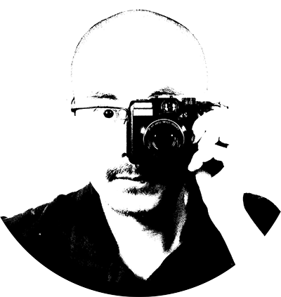

ANDRE M. CHANG

Multicultural independent visual journalist | Photographer [en]
Periodista visual multicultural independiente | Fotógrafo [es]
Jornalista visual multicultural independente | Fotógrafo [pt-BR]
多元文化獨立視覺記者 | 攝影師 [zh-TW]
For commissions and projects: email
Originally from Brazil | Currently in Asuncion, Paraguay

Updated [2024.02.29]